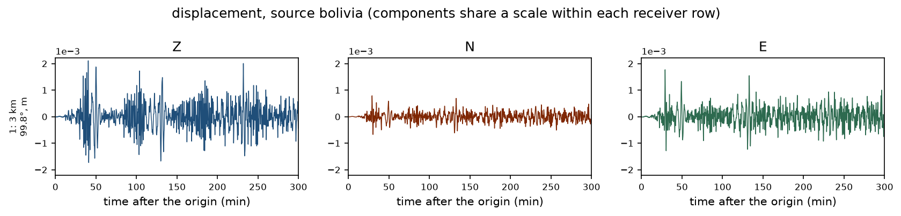
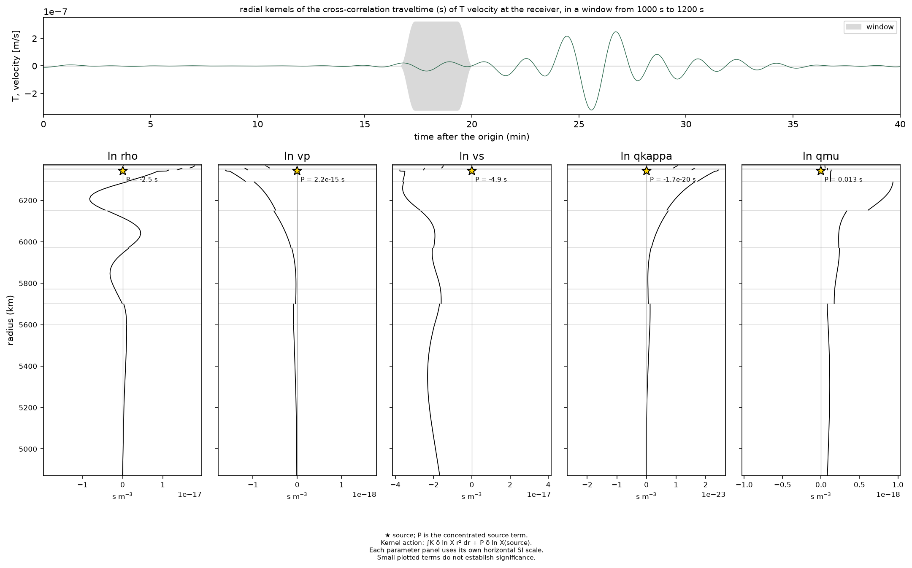
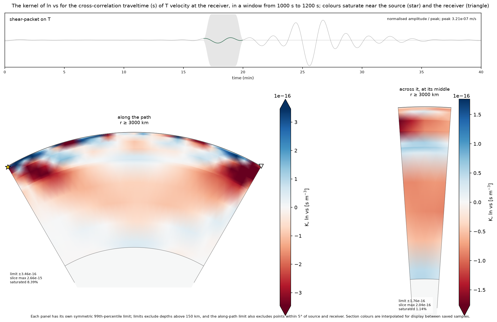

Examples
The optional Python plotting tools read a run's input file and generated output files. They do not change the calculation.
{{REVISION_NOTICE}}
Install the source package with the plot extra, then run a seismogram using the first-run fixture. From the repository root, save the physical Z, N and E components for receiver 1:
MPLBACKEND=Agg OMP_NUM_THREADS=2 build/python-venv/bin/yspec-plot traces build/first-seismogram/input.json \
--receivers 1 --components ZNE -o build/first-seismogram/traces.pngComponents in each receiver row share one amplitude scale by default. Use --scale independent only when separate component scales are useful, and retain the explicit scale notice in the figure. The compare command rejects runs whose physical quantity, output units, receiver geometry or exact time samples differ; it does not silently align or resample traces.

Run the bounded input from the kernel guide first. The plot subcommands accept the kernel input JSON and select a named measurement. For a radial kernel and an along/across section:
MPLBACKEND=Agg OMP_NUM_THREADS=2 build/python-venv/bin/yspec-plot kernels build/kernel-small/input.json \
--measurement shear-packet --deepest 1500 -o build/kernel-small/radial.png
MPLBACKEND=Agg OMP_NUM_THREADS=2 build/python-venv/bin/yspec-plot banana build/kernel-small/input.json \
--measurement shear-packet --parameter vs -o build/kernel-small/section.png

yspec-plot --help lists traces, record sections, comparisons between runs, snapshots, radial kernels, volume kernels, path sections (banana), and a multi-measurement gallery. Snapshot panels use independent colour limits by time unless --common is supplied; the map assigns saved values to nearest-sample cells, and section shading interpolates colours for display without adding numerical resolution. Spatial plots report limits, evaluated-slice maxima before clipping, saturated fractions and units. Non-K banana and gallery panels are cropped at a radius of 3000 km; panel titles show the radial extent, and values outside the crop are omitted rather than drawn as zero. Without -o, a plot opens interactively. volume reads a C++-generated NetCDF kernel model; it does not enable volume generation in the Python package build. See the output formats and plot status and provenance for units and the scientific limits of the examples, with the complete hash record in its machine-readable manifest.